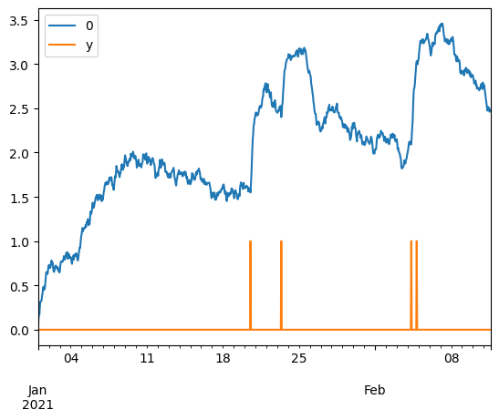
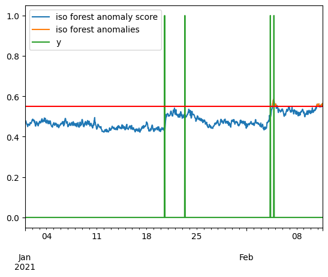
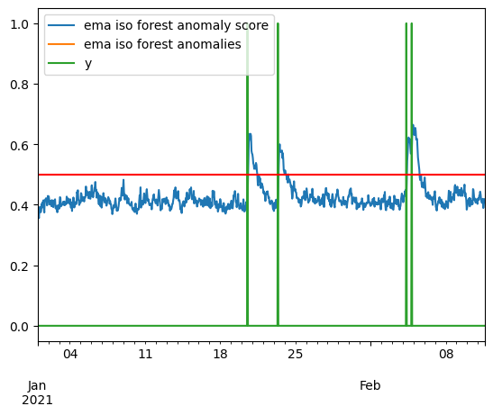

Synthetic data simulation
import numpy as np
import pandas as pd
from ouagen import ornstein_uhlenbeck_anomaly
t = np.arange(1000)
t = t / t.shape[0]
pre_X, pre_y = ornstein_uhlenbeck_anomaly(
t,
size=20,
noise_scale=1,
mean_reverting=3,
anomaly_freq=.1,
anomaly_duration=0.005,
anomaly_scale=40,
)
t = pd.to_datetime('2021-01-01') + pd.Timedelta(1, 'h') * np.arange(t.shape[0])
X = pd.DataFrame(pre_X, index=t, columns=[f'X{i}' for i in range(pre_X.shape[1])])
y = pd.DataFrame(pre_y[:, None], index=t, columns=['y'])
display(X)
async_X = X.melt(value_vars=X.columns.tolist(), ignore_index=False).rename(
columns={"variable": "sensor", "value": "data"}
)
display(async_X)
pd.concat([X, y], axis=1).plot()
| X0 | X1 | X2 | X3 | X4 | X5 | X6 | X7 | X8 | X9 | X10 | X11 | X12 | X13 | X14 | X15 | X16 | X17 | X18 | X19 | |
|---|---|---|---|---|---|---|---|---|---|---|---|---|---|---|---|---|---|---|---|---|
| 2021-01-01 00:00:00 | 0.000000 | 0.000000 | 0.000000 | 0.000000 | 0.000000 | 0.000000 | 0.000000 | 0.000000 | 0.000000 | 0.000000 | 0.000000 | 0.000000 | 0.000000 | 0.000000 | 0.000000 | 0.000000 | 0.000000 | 0.000000 | 0.000000 | 0.000000 |
| 2021-01-01 01:00:00 | 0.005252 | 0.024728 | 0.026952 | -0.022360 | -0.029462 | 0.028039 | -0.007014 | 0.012071 | -0.024431 | 0.027290 | -0.008894 | -0.029470 | -0.015765 | 0.024170 | 0.006056 | -0.019567 | 0.052675 | 0.054966 | 0.037385 | 0.035398 |
| 2021-01-01 02:00:00 | 0.027888 | -0.032840 | 0.062813 | -0.024298 | -0.024962 | 0.007937 | -0.027353 | 0.033791 | -0.059576 | 0.030615 | -0.041340 | -0.041302 | 0.028096 | 0.013593 | -0.032369 | -0.030601 | 0.055585 | 0.082502 | 0.046551 | 0.018346 |
| 2021-01-01 03:00:00 | -0.006903 | -0.060266 | 0.034705 | -0.011602 | -0.023157 | -0.018953 | 0.003918 | 0.043048 | -0.005327 | 0.018585 | -0.049878 | -0.077205 | 0.015227 | -0.014894 | -0.046688 | -0.023597 | 0.076257 | 0.045855 | 0.041023 | -0.013725 |
| 2021-01-01 04:00:00 | 0.041263 | -0.051675 | -0.021960 | 0.007861 | 0.001067 | -0.053171 | 0.041826 | -0.002919 | 0.031187 | 0.003237 | -0.069468 | -0.150257 | -0.005190 | -0.035196 | -0.033748 | -0.084091 | 0.091617 | 0.078086 | 0.077962 | -0.021141 |
| ... | ... | ... | ... | ... | ... | ... | ... | ... | ... | ... | ... | ... | ... | ... | ... | ... | ... | ... | ... | ... |
| 2021-02-11 11:00:00 | -0.045880 | -0.710766 | -0.097687 | 1.036003 | 0.674646 | 0.726933 | 0.529645 | 0.031269 | 0.890464 | -0.861574 | -0.490439 | -0.239189 | -0.129772 | -0.522085 | 0.307080 | 0.145893 | 0.437884 | -0.842048 | 0.190714 | 0.357574 |
| 2021-02-11 12:00:00 | -0.042093 | -0.749522 | -0.106187 | 1.042480 | 0.636715 | 0.668605 | 0.487211 | 0.003060 | 0.909014 | -0.847666 | -0.548754 | -0.219306 | -0.158270 | -0.566806 | 0.305682 | 0.200074 | 0.402115 | -0.870675 | 0.148192 | 0.400314 |
| 2021-02-11 13:00:00 | -0.039539 | -0.816215 | -0.103101 | 1.023325 | 0.670355 | 0.665394 | 0.430242 | 0.038435 | 0.844820 | -0.885687 | -0.529422 | -0.166633 | -0.132188 | -0.563205 | 0.275267 | 0.167789 | 0.399349 | -0.837403 | 0.114430 | 0.363303 |
| 2021-02-11 14:00:00 | 0.045796 | -0.803112 | -0.105205 | 1.049967 | 0.643303 | 0.664459 | 0.465075 | 0.069509 | 0.930086 | -0.889746 | -0.534425 | -0.147937 | -0.141524 | -0.562967 | 0.289132 | 0.150164 | 0.399101 | -0.806114 | 0.096359 | 0.326373 |
| 2021-02-11 15:00:00 | -0.002016 | -0.804371 | -0.100574 | 1.069136 | 0.639176 | 0.651138 | 0.487456 | 0.093443 | 0.904328 | -0.890001 | -0.555217 | -0.210177 | -0.177874 | -0.493351 | 0.298163 | 0.221578 | 0.377257 | -0.785403 | 0.082574 | 0.288254 |
1000 rows × 20 columns
| sensor | data | |
|---|---|---|
| 2021-01-01 00:00:00 | X0 | 0.000000 |
| 2021-01-01 01:00:00 | X0 | 0.005252 |
| 2021-01-01 02:00:00 | X0 | 0.027888 |
| 2021-01-01 03:00:00 | X0 | -0.006903 |
| 2021-01-01 04:00:00 | X0 | 0.041263 |
| ... | ... | ... |
| 2021-02-11 11:00:00 | X19 | 0.357574 |
| 2021-02-11 12:00:00 | X19 | 0.400314 |
| 2021-02-11 13:00:00 | X19 | 0.363303 |
| 2021-02-11 14:00:00 | X19 | 0.326373 |
| 2021-02-11 15:00:00 | X19 | 0.288254 |
20000 rows × 2 columns
<Axes: >

pd.concat([((X ** 2).sum(axis=1) ** .5), y], axis=1).plot()
<Axes: >

from tadkit.catalog.rawtowideformatter import RawToWideFormatter
formatter = RawToWideFormatter(
data=X,
# timestamps=X.index,
backend="pandas"
)
formatter.available_properties
['synchronous', 'pandas_backend', 'fixed_time_step']
print(formatter.query_description)
{'target_period': {'description': 'Time period to select', 'family': 'time_interval', 'start': np.datetime64('2021-01-01T00:00:00.000000000'), 'stop': np.datetime64('2021-02-11T15:00:00.000000000'), 'default': (np.datetime64('2021-01-01T00:00:00.000000000'), np.datetime64('2021-02-11T15:00:00.000000000'))}, 'target_space': {'description': 'Columns or sensors to select', 'family': 'space', 'set': ['X0', 'X1', 'X2', 'X3', 'X4', 'X5', 'X6', 'X7', 'X8', 'X9', 'X10', 'X11', 'X12', 'X13', 'X14', 'X15', 'X16', 'X17', 'X18', 'X19'], 'default': ['X0', 'X1', 'X2', 'X3', 'X4', 'X5', 'X6', 'X7', 'X8', 'X9', 'X10', 'X11', 'X12', 'X13', 'X14', 'X15', 'X16', 'X17', 'X18', 'X19']}, 'resample': {'description': 'Resample data?', 'family': 'bool', 'default': False}, 'resample_freq': {'description': 'Resampling frequency in seconds.', 'family': 'time', 'start': 60, 'default': 120, 'stop': 3600}}
from query_selection import query_widget_selection
query_dict = query_widget_selection(formatter.query_description)
query_translated = {key: widget.value for key, widget in query_dict.items()}
formatter.backend = "numpy"
query = formatter.format(**query_translated)
query
array([[ 0. , 0. , 0. , ..., 0. ,
0. , 0. ],
[ 0.00525208, 0.02472789, 0.02695162, ..., 0.05496634,
0.03738528, 0.03539777],
[ 0.0278881 , -0.03284016, 0.06281325, ..., 0.08250195,
0.04655068, 0.01834615],
...,
[-0.09361403, -0.88180157, 0.00947269, ..., -0.88462024,
0.12293536, 0.69455948],
[-0.07396143, -0.9167913 , -0.04366985, ..., -0.81078897,
0.15956877, 0.69222348],
[-0.08287074, -0.90335556, -0.11737827, ..., -0.84533462,
0.08865186, 0.68593266]], shape=(985, 20))
Learners
from sklearn.ensemble import IsolationForest
from tadkit.base.tadlearner import TADLearner
isinstance(IsolationForest, TADLearner)
True
import matplotlib.pyplot as plt
learner = IsolationForest()
learner.fit(X)
anom_score = -learner.score_samples(X)
iso_score = pd.DataFrame(anom_score, index=X.index, columns=["iso forest anomaly score"])
ceil = .55
iso_anomalies = iso_score[iso_score > ceil]
iso_anomalies.rename(columns={"iso forest anomaly score": "iso forest anomalies"}, inplace=True)
pd.concat([iso_score, iso_anomalies, y], axis=1).plot()
plt.axhline(y=ceil, color='r', linestyle='-')
learner
IsolationForest()In a Jupyter environment, please rerun this cell to show the HTML representation or trust the notebook.
On GitHub, the HTML representation is unable to render, please try loading this page with nbviewer.org.
Parameters
| n_estimators | 100 | |
| max_samples | 'auto' | |
| contamination | 'auto' | |
| max_features | 1.0 | |
| bootstrap | False | |
| n_jobs | None | |
| random_state | None | |
| verbose | 0 | |
| warm_start | False |

class ExponantialMean:
def __init__(self, lags, sub_X=False) -> None:
self.lags = np.array(lags)
self.sub_X = sub_X
assert sum(d != 1 for d in self.lags.shape) <= 1
self.lags = self.lags.reshape(-1)
def transform(self, X):
lags_len, = self.lags.shape
index = X.index
columns = sum(
([f'{colname}_ema{i}' for i in range(lags_len)] for colname in X.columns),
start=[]
)
t = index.astype('int64') * 1e-9
X = X.values
n, d = X.shape
result = np.empty((n, d, lags_len))
result[0] = X[0, :, None]
for i in range(n-1):
weight = np.exp(-(t[i+1] - t[i]) / self.lags)[None, None]
result[i+1] = result[i] * weight + X[i+1, :, None] * (1 - weight)
if self.sub_X:
result -= X[:, :, None]
result = pd.DataFrame(
result.reshape((n, -1)),
index=index,
columns=columns
)
return result
MINUTE = 60
HOUR = 60 * MINUTE
DAY = 24 * HOUR
exponential_mean = ExponantialMean([DAY, 3* DAY], sub_X=True)
exponential_mean.transform(X)
| X0_ema0 | X0_ema1 | X1_ema0 | X1_ema1 | X2_ema0 | X2_ema1 | X3_ema0 | X3_ema1 | X4_ema0 | X4_ema1 | ... | X15_ema0 | X15_ema1 | X16_ema0 | X16_ema1 | X17_ema0 | X17_ema1 | X18_ema0 | X18_ema1 | X19_ema0 | X19_ema1 | |
|---|---|---|---|---|---|---|---|---|---|---|---|---|---|---|---|---|---|---|---|---|---|
| 2021-01-01 00:00:00 | 0.000000 | 0.000000 | 0.000000 | 0.000000 | 0.000000 | 0.000000 | 0.000000 | 0.000000 | 0.000000 | 0.000000 | ... | 0.000000 | 0.000000 | 0.000000 | 0.000000 | 0.000000 | 0.000000 | 0.000000 | 0.000000 | 0.000000 | 0.000000 |
| 2021-01-01 01:00:00 | -0.005038 | -0.005180 | -0.023719 | -0.024387 | -0.025852 | -0.026580 | 0.021447 | 0.022051 | 0.028259 | 0.029055 | ... | 0.018768 | 0.019297 | -0.050525 | -0.051948 | -0.052723 | -0.054208 | -0.035860 | -0.036870 | -0.033953 | -0.034910 |
| 2021-01-01 02:00:00 | -0.026544 | -0.027432 | 0.032468 | 0.032724 | -0.059195 | -0.061580 | 0.022432 | 0.023659 | 0.022790 | 0.024216 | ... | 0.028586 | 0.029913 | -0.051255 | -0.054102 | -0.076983 | -0.080616 | -0.043187 | -0.045400 | -0.016212 | -0.017612 |
| 2021-01-01 03:00:00 | 0.007910 | 0.007258 | 0.057449 | 0.059319 | -0.029818 | -0.033011 | 0.009338 | 0.010811 | 0.020129 | 0.022103 | ... | 0.020701 | 0.022593 | -0.068992 | -0.073743 | -0.038690 | -0.043363 | -0.036123 | -0.039322 | 0.015212 | 0.014260 |
| 2021-01-01 04:00:00 | -0.038613 | -0.040344 | 0.046865 | 0.050029 | 0.025752 | 0.023329 | -0.009712 | -0.008532 | -0.003929 | -0.002092 | ... | 0.077882 | 0.081941 | -0.080909 | -0.087874 | -0.068027 | -0.074551 | -0.070080 | -0.075210 | 0.021705 | 0.021378 |
| ... | ... | ... | ... | ... | ... | ... | ... | ... | ... | ... | ... | ... | ... | ... | ... | ... | ... | ... | ... | ... | ... |
| 2021-02-11 11:00:00 | 0.036233 | 0.162953 | -0.157976 | -0.312027 | -0.054504 | -0.208378 | 0.062005 | 0.036372 | 0.167697 | 0.220710 | ... | 0.100072 | 0.190646 | 0.084005 | 0.003536 | -0.137007 | -0.136692 | 0.030745 | 0.084516 | 0.230806 | 0.086975 |
| 2021-02-11 12:00:00 | 0.031122 | 0.156971 | -0.114354 | -0.269502 | -0.044127 | -0.197121 | 0.053261 | 0.029482 | 0.197236 | 0.255073 | ... | 0.044017 | 0.134582 | 0.114886 | 0.038763 | -0.103956 | -0.106573 | 0.070277 | 0.125286 | 0.180390 | 0.043624 |
| 2021-02-11 13:00:00 | 0.027402 | 0.152287 | -0.045716 | -0.200011 | -0.045285 | -0.197445 | 0.069461 | 0.047966 | 0.156919 | 0.218379 | ... | 0.073188 | 0.164565 | 0.112851 | 0.040956 | -0.131628 | -0.137917 | 0.099793 | 0.156854 | 0.208530 | 0.079523 |
| 2021-02-11 14:00:00 | -0.055569 | 0.066028 | -0.056419 | -0.210175 | -0.041419 | -0.192647 | 0.041071 | 0.021030 | 0.176463 | 0.242045 | ... | 0.087108 | 0.179678 | 0.108483 | 0.040636 | -0.156268 | -0.166872 | 0.113054 | 0.172512 | 0.235442 | 0.114847 |
| 2021-02-11 15:00:00 | -0.007441 | 0.112270 | -0.052909 | -0.206035 | -0.044171 | -0.194557 | 0.021008 | 0.001835 | 0.173221 | 0.242778 | ... | 0.015053 | 0.106770 | 0.125008 | 0.061618 | -0.169757 | -0.184996 | 0.121663 | 0.183728 | 0.262397 | 0.150856 |
1000 rows × 40 columns
from tadkit.utils.decomposable_tadlearner import decomposable_tadlearner_factory
EMAForestLearner = decomposable_tadlearner_factory(ExponantialMean, IsolationForest)
learner = EMAForestLearner(lags=np.geomspace(.1 * DAY, 2 * DAY, 10), sub_X=True)
learner.random_state = -1
learner.fit(X)
anom_score = -learner.score_samples(X)
ema_score = pd.DataFrame(anom_score, index=X.index, columns=["ema iso forest anomaly score"])
ceil = .5
ema_anomalies = ema_score[iso_score > ceil]
ema_anomalies.rename(columns={"ema iso forest anomaly score": "ema iso forest anomalies"}, inplace=True)
learner
<tadkit.utils.decomposable_tadlearner.ExponantialMeanIsolationForest at 0x221da1c5e80>
pd.concat([ema_score, ema_anomalies, y], axis=1).plot()
plt.axhline(y=ceil, color='r', linestyle='-')
<matplotlib.lines.Line2D at 0x221dba8c4a0>
